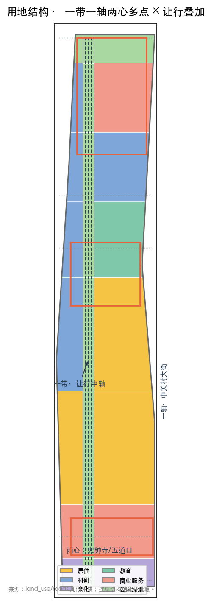
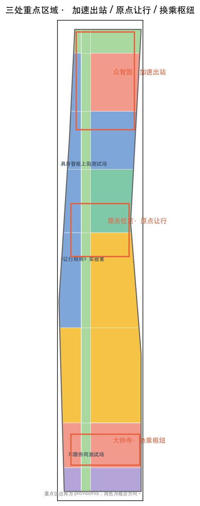
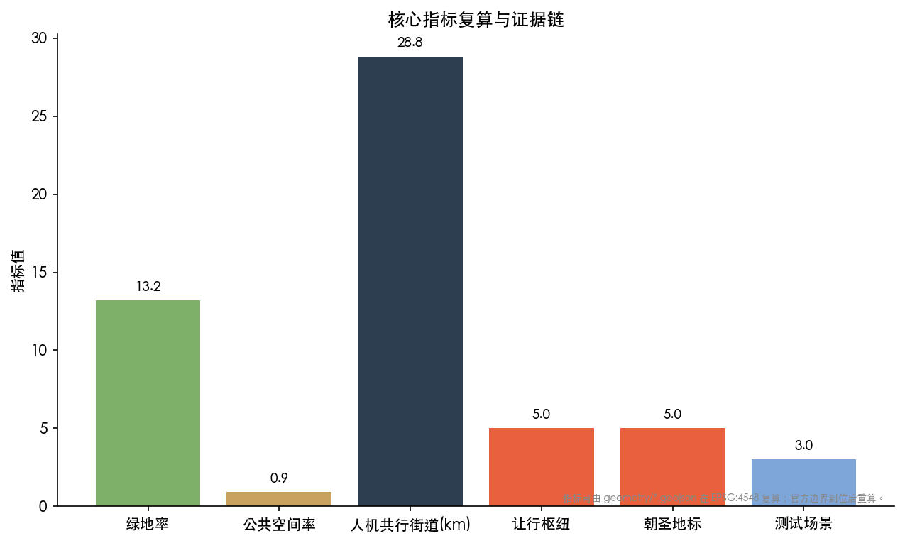

MAKE-WAY BELT: From the Ren-Shaped Railway to a Human-Machine Co-Travel City
Rooted in the century-old wisdom of the Jing-Zhang Railway's 'ren'-shaped switchback, this proposal introduces the MAKE-WAY BELT (相让带) — built on a three-track human-machine co-travel street system with physical segregation (human path / slow greenway / machine lane) as its spatial skeleton and three embodied-AI real-world test fields as its industrial anchors, where 'making way' is an operating rule of the three tracks rather than a slogan. The three positionings and five functions are organised along the officially approved 'one belt, one axis, two centres, multiple nodes' structure into a three-track co-travel spine and five make-way hubs; the three key areas are positioned as 'acceleration departure, origin yielding, transfer hub'; graduated autonomy and human fallback respond to 'global AI-governance voice'. All spatial conclusions are concept suggestions based on provisional boundaries.
MAKE-WAY BELT: From the Ren-Shaped Railway to a Human-Machine Co-Travel City
Design Basis and Source Inventory
This proposal takes the Centennial Jing-Zhang AI Innovation Belt Urban Design International Open Call pre-qualification announcement as its first basis and the open-call taskbook addressed to AI agents as its second, with the provisional boundaries, key areas, enums, metrics and source inventory registered in brief/site-package/ serving as machine-readable ground Source Source. The street-control plan for the corridor along the Jing-Zhang Railway Heritage Park, approved on 11 August 2026, defines the official spatial structure of "one belt, one axis, two centres, multiple nodes" and a green-led renewal path; this proposal layers design on top of it and does not replace statutory planning Source.
All spatial conclusions are based on the provisional rough boundaries in provisional_boundaries.geojson (PROV-SITE-001 / PROV-KEY-001/002/003), marked provisional_constraint: they are for concept generation and visualisation only, not for official red-lines or precise areas; a full recomputation is required once official polygons arrive Source Depth. Complete sources, metrics, standards and task coverage are held in sources.json, metrics.json, standard_matrix.json, design_depth_matrix.json and compliance_matrix.json; the narrative does not repeat machine indexes.
Four principles govern every design judgement: use only real public or cleared data; support material claims with verifiable positive or negative precedents; express all spatial moves as concept suggestions rather than statutory conclusions; and design AI-native spaces of human-machine coexistence instead of pasting an AI label onto conventional schemes.

Three-Level Scope Framework
Coordinated research area (43.6 km²): studies the world-class AI innovation ecosystem, the three-areas-two-wings coupled network, AI industry and future-city form, AI+mobility and the continuous green-space system; expressed as an industrial strategy and network relations rather than parcel-by-parcel placement Source Standard.
Overall design area (11.4 km²): takes the approved "one belt, one axis, two centres, multiple nodes" skeleton Source and adds the "three-track co-travel spine + five make-way hubs + three-track human-machine co-travel streets" to control-detailed-planning urban design depth; the area is measured from the submitted boundary at site_area_sqm ≈ 1,141.3 ha Metric and recomputed when the official boundary arrives Standard.
Key detailed-design area (368.4 ha, provisional): detailed design at implementation-plan urban design depth for the Zhongzhiyuan AI Autonomous Innovation Acceleration Area, the Beijing AI Origin Community and the Dazhongsi AI Industry Cluster Spatial data. The three key-area boundaries are provisional; the roles of "acceleration departure, origin yielding, transfer hub" are concept directions for professional teams to deepen.
The three levels are linked by: industrial strategy (research) → spatial structure and renewal framework (design) → node detailing (key areas); the corresponding layers, metrics and depth items are listed in compliance_matrix.json and design_depth_matrix.json.

Coordinated Research Area: Industry and Future-City Study
Naming and Identity System (Agent Task 1)
The primary name is MAKE-WAY BELT (相让带), drawn from the century-old wisdom of the Jing-Zhang Railway's "ren"-shaped switchback — Zhan Tianyou made the train turn around at Qinglongqiao to climb a 33‰ gradient, yielding to the slope to complete China's first self-built trunk line Source. The contemporary wisdom of the AI belt is three-track co-travel: on three physically segregated tracks (human path, slow greenway, machine lane), people and machines each have their place and yield to each other — from the engineering "way" (letting the train climb) to the spatial "way" (layering right-of-way). Making way is an operating rule of the three tracks, not a slogan Standard.
The naming choice was tested against the concept space of existing submissions: among 606 peer proposals the "ren"/switchback family (185), "dual-track" family (145) and "turn-back" family (96) are saturated, and governance motifs like "handover-to-human / revocability" have become consensus (153/239 hits); while "three-track" (8) and "human-machine co-travel" (7) are nearly empty. Hence the proposal leads with the spatial design of three-track physical segregation, with making way demoted to an operating rule, differentiating while keeping the cultural root Source.
Logo direction: three parallel tracks (human, slow, machine) linked by a horizontal "make-way bar" — the three lines each keep their place, and the bar stands for the rule that weaves them into one network. The Chinese mark takes the bowing-gesture form of "让"; the English mark takes the roadway make-way gesture; the shared motif is used for hub signage, three-track ground markings, robot bodies and event identity Source.
Three Positionings, Five Functions, Three Areas and Two Wings
Three positionings: Centennial Jing-Zhang Cultural Belt, Urban AI Living Experience Belt, AI Fusion Innovation Belt — carried respectively by the make-way culture, the co-travel streets and the Make-Way Rules governance Source.
Five functions land spatially: full-stack AI self-reliance → Zhongzhiyuan; world-class AI innovation ecosystem → Origin Community; AI+ scenario empowerment paradigm → Dazhongsi and the Xiaoyue River scenario wing; intelligent, vibrant AI city → the three-track co-travel street system; global AI-governance voice → the Make-Way Rules with graduated autonomy and human fallback Source Standard.
Three-areas-two-wings loop: the three areas form a "rules—acceleration—application" innovation loop, and the two wings (Zhongguancun tech-services wing, Xiaoyue River scenario-empowerment wing) supply capital and scenarios. This proposal uses "making way" as the axis so the three areas and two wings organise around one co-travel mainline instead of acting independently Source.
Global AI Innovation Ecosystem and Governance Cases (10)
1. Dazhongsi 1733: a 430,000 m² dormant mall renewed into ByteDance offices plus culture-commerce-tourism, "roots in heritage, support in digital, soul in everyday life", with "ancient-temple + AI commerce" scenarios Source. 2. Beijing Satellite Manufacturing Factory Science Park: the birthplace of Dongfanghong-1 renewed through "repair-as-original" into an intelligent-manufacturing demonstration zone hosting an embodied-AI research institute — an "industrial skeleton, new-function skin" precedent Source. 3. Dinghao DH3: one of the electronics-mall "golden triangle" transformed into an AI landmark, ~98% occupancy, hosting AI labs and robotics firms Source. 4. Wudaokou AI Industrial Park: 11 buildings, 140,000 m², 118 AI firms and 5+ billion RMB revenue; pioneer district of Haidian's AI innovation street Source. 5. Zhongzhiyuan: an AI full-stack five-layer system expected to be ready to open in July 2026, with the FlagOS multi-chip operator library underpinning a self-reliant ecosystem Source. 6. Embodied-AI street trend: Chengdu's Jiaozidao robot street, Shanghai Yangpu's University-Road innovation street and Shenzhen's "Jijing" air-ground joint enforcement — the "year one of scenario landing" human-machine coexistence practices, positive precedents for the co-travel streets Source. 7. Singapore Punggol Digital District physical-AI testbed (2026-05): the world's first large-scale multi-vendor robot trials (delivery/patrol/cleaning, 8 firms) in mixed-use public space, exempted under the Active Mobility Act to test on public corridors — the global precedent for this proposal's embodied-AI real-world test field Source. 8. Singapore graduated-autonomy framework: supervision intensity scales with agent impact, human approval at critical nodes, offline on failure, "organisations and humans remain ultimately responsible" — governance backing for the Make-Way Rules' graduated autonomy and human fallback Source. 9. EU AI Act agentic-governance gap: liability attribution, the supervision paradox and cross-jurisdiction operation remain unaddressed, with robot safety-element compliance deferred to 2028 — international context for the "global AI-governance voice" function Source. 10. Monash six-city robot-governance study (2025): even leading robot cities lack policies protecting public interest beyond safety, urging anticipatory, citizen-engaged policymaking — backing this proposal's anti-surveillance and anti-displacement red lines Source.
These cases distill spatialisable, operable and scenario-based lessons: treat real-world testing as public experience (Punggol / the heritage park), use graduated autonomy as a governance mechanism (Singapore framework), and use physical segregation as the safety premise (three-track design) — echoing the "physical API" proposal for machine-readable curbs and shared incident databases Source.
Overall Design Area: Urban Renewal and Control-Detailed-Planning Urban Design
Spatial Structure: One Belt, One Axis, Two Centres, Multiple Nodes × Three-Track Co-Travel Layering
On the approved skeleton Source:
- The Belt = Jing-Zhang Heritage Park = Three-Track Co-Travel Spine: over the existing "three paths one green" slow-traffic system, a robot micro-mobility lane is added, forming three physically segregated co-travel tracks of "human path / slow greenway / machine micro-mobility lane" — the proposal's most central spatial move, where the make-way rule actually lands instead of remaining a slogan Source Spatial data Standard.
- The Axis = Zhongguancun Avenue Innovation Axis: keeps its official role as the main east-west make-way connector.
- Two centres = Dazhongsi centre and Wudaokou centre: evolved into the make-way transfer hub and the make-way memory hub.
- Multiple nodes = Zhichun Road, Sidaokou and others: evolved into the make-way experiment hub and community nodes.
Five make-way hubs (Xizhimen portal / Dazhongsi transfer / Zhichun Road experiment / Wudaokou memory / North-5th-Ring portal) are both transport interchanges and the physical classrooms and display grounds of the Make-Way Rules Spatial data.
Renewal Framework and Retain/Renovate/Demolish Logic
Acupuncture-style mending rather than large-scale demolition: the 9-km completed green corridor is the "ren-meridian" baseline Source, mended along fishbone slow corridors and nodes, preserving industrial heritage as-is (the satellite factory's "repair-as-original" is the model Source). Retain/renovate/demolish proceeds along the rail as "disassemble—recompose—rebirth", but parcel-level retain/renovate/demolish must wait for official ownership and existing-building data; this proposal gives concept zones only Source Depth Standard.
Pending Regulatory Conditions
The official FAR, height, density, green-ratio and setback controls are absent from the cleared package and are recorded as status=unknown; concept volumes recomputed from geometry (such as floor_area_ratio ≈ 0.50) are design quantities only and are not statutory control values Metric Depth.
Detailed Design of the Three Key Areas
Zhongzhiyuan AI Autonomous Innovation Acceleration Area (192.1 ha, provisional) — "Acceleration Departure"
Positioning: AI full-stack self-reliance and export acceleration. Spatially a "departure acceleration" metaphor: the metro-linked drop-off platform is the "platform", entering the park is boarding, acceleration is departure. The five layers (R&D / foundation / research / application / ecosystem) surround the FlagOS multi-chip operator library Source. Building renewal favours new supply with selective retrofit; mobility adds robot micro-mobility lanes and delivery transfers; public space adds an "acceleration-departure plaza" and an AI sports training test field; AI scenarios: AI export service window, multi-chip computing showcase, embodied-AI on-street testing Spatial data.
Beijing AI Origin Community (104.3 ha, provisional) — "Origin Yielding"
Positioning: rules are born here. It hosts the Make-Way Rules Lab and the "origin-yielding plaza": "who yields to whom, how to overtake, how to take over in failure" are drafted as an openly discussable, iterable rulebook. The community keeps its everyday vitality as a daily experiment field of the "intelligent, vibrant AI city" Spatial data. AI scenarios: community smart eldercare, AI sports, driverless-logistics co-travel testing; renewal favours retention plus mending, with affordable housing and local-employment provisions to prevent gentrification-driven displacement Source.
Dazhongsi AI Industry Cluster (72 ha, provisional) — "Transfer Hub"
Positioning: the interchange and confluence of AI-native new business forms. Based on the Line 12/13 interchange and the Dazhongsi 1733 culture-commerce-tourism precedent Source, it forms a "transport × commerce × ancient-temple culture" three-way interchange: vehicle-road cooperative testing, temple AI guided tours, unmanned retail and smart shopping are integrated here Spatial data.
Each key area is organised as a complete mini-scheme of "positioning + spatial structure + building renewal + mobility + public space + AI scenarios + implementation risk"; because the boundaries are provisional, all conclusions are directional concept suggestions, with geometry and areas corrected once official polygons arrive.

AI Innovation Ecosystem, Talent Profiles and AI+ Scenarios
User Personas (≥5)
1. Commuting programmer: works in Zhongguancun/Zhongzhiyuan, commutes in the morning peak within the "20-minute commute-leisure circle", co-travels with robot delivery. 2. University students and faculty: across 50+ campuses and institutes (Tsinghua, BFSU, Beihang...), cross-campus innovation and youth communities in the spirit of 706 Youth Space. 3. Community elders: the highly educated but ageing population among the 450,000 residents; smart eldercare, accessibility and intergenerational integration are real needs Standard. 4. Robotics service providers: embodied-AI, delivery and inspection firms needing real-world test fields and co-travel rules. 5. Street merchants: operators in Dazhongsi 1733, the satellite-factory park and Wudaokou, needing digital operations and foot-traffic management. 6. Visitors and developers: tourists to the heritage park / Eight Colleges / AI landmarks and global developers.
AI Scenario Cards (≥10)
| # | Scenario | Served | Spatial anchor | Data/privacy | Human review |
|---|---|---|---|---|---|
| 1 | Robot delivery yielding | commuters/merchants | three-track streets | route anonymised | platform + patrol |
| 2 | Driverless micro-shuttle | commuting programmers | make-way spine | station data | operator + traffic |
| 3 | AI sports training test | students/residents | Zhongzhiyuan section | bio-signal anonymised | coach + operator |
| 4 | Smart eldercare station | elders | Origin Community | health data anonymised | community + medical |
| 5 | Temple AI guided tour | visitors | Dazhongsi | none | museum review |
| 6 | Unmanned retail / smart shopping | merchants/visitors | 1733 / satellite park | consumption anonymised | merchant self-audit |
| 7 | Human-machine games / interactive shows | youth/developers | Wudaokou plaza | none | operator |
| 8 | AI health navigation | residents | street stations | health data anonymised | medical institution |
| 9 | Robot inspection | communities/parks | belt nodes | video anonymised | property + governance |
| 10 | AI export service window | enterprises | Zhongzhiyuan | enterprise data isolated | park operator |
| 11 | Embodied-AI on-street test (verification) | robotics firms | satellite-park test street | test logs | test committee |
| 12 | AI sports training test (verification) | sports-tech firms | Zhongzhiyuan section | motion data | professional coaches |
| 13 | Vehicle-road cooperative test (verification) | autonomous-driving firms | Dazhongsi section | trajectory data | traffic + third party |
Each card has a structured record in scenarios/*.json; readable summaries are presented here. All scenarios are bound by the Make-Way Rules and data-governance constraints Source Source Standard.
Land Use, Building Scale and Retain/Renovate/Demolish
Land use is topologically split from the submitted boundary, covering it fully without overlap Spatial data: residential (0701, ≈3.73M m²), research (0802, ≈2.29M m²), commercial services (05, ≈2.00M m²), education (0804, ≈0.89M m²), culture (0803, ≈0.55M m²) and park green (1401, ≈1.95M m²) Metric. Green ratio ≈13.2% and public-space ratio ≈0.9% (the completed green corridor is counted within green space) Metric Metric. Land-use classification follows the territorial-space land-and-sea classification guide Standard.
Building scale is a concept estimate: conceptual footprints ≈1.42M m² (building_footprint_area_sqm), with an assumed average of 4 storeys giving ≈5.68M m² and a FAR of ≈0.50 — all low-confidence design quantities, not statutory control values, to be recomputed when official controls and existing-building data arrive Metric Metric.
Retain/renovate/demolish follows "retain first, renovate second, minimal new-build"; parcel-level classification awaits ownership and existing-condition data Source Depth.
Mobility, Rail, Municipal and Public Services
The three-track co-travel street system is the mobility core: three physically segregated tracks — "human / slow / machine" — along the spine Spatial data Metric, governed by the Make-Way Rules: time-segregation (robot delivery windows), lane-segregation (independent machine lanes), priority (pedestrians absolute), failure takeover (robots pull over); the three tracks total ≈28.8 km Metric. Segregation is premised on accessibility and pedestrian absolute priority Standard.
Rail-station integration: on the Line 10/12/13/15 network and the Xizhimen, Dazhongsi, Zhichun Road and Wudaokou interchanges, make-way hub plazas with bicycle/robot parking are proposed Source. Municipal and new infrastructure: distributed energy, edge computing and the existing municipal network are addressed as system suggestions without engineering alignment conclusions Depth. Public services: around the "15-minute community service circle", living-service and innovation-service platforms are proposed; facility capacity awaits official baseline data Source.

Blue-Green Space, Public Space and City Character
Blue-green base: the 9-km make-way green corridor Source connects the Qinghe waterfront greenway and the Dongsheng Bajia country park, with make-way pocket parks and under-canopy theatres along it. Public space: five make-way hub plazas plus the origin-yielding plaza and the Dongfanghong Square (existing renewal) Spatial data.
AI pilgrimage landmarks (≥3, all with real anchors): 1. Qinghuayuan Station (founded 1910, station house restored) — century-old memory origin Source 2. Dongfanghong Square (satellite factory, "Two Bombs, One Satellite" and Dongfanghong-1) — science self-reliance origin Source 3. Jingzhang Ring 1909 (northern theme plaza) — railway origin Source 4. Wudaokou Level Crossing — "the first classroom of making way": Wudaokou people yielded to trains for 100 years Source 5. 706 Youth Space — youth-community operations origin
City character: a unified wayfinding, paving and Logo system on the "make-way" motif; character control keeps industrial heritage as-is (red brick, gantry cranes, old rails) as the base, while new volumes soften the tech atmosphere with warm-tech textures (art, natural materials, human scale). Landmarks, wayfinding and corporate identity are rights-cleared; concept landmarks are not presented as approved construction.
Renewal Project List, Policy and Phasing
Phasing (corresponding to geometry/phasing.geojson):
- Phase 1 (rules + demonstration): Origin Community Make-Way Rules Lab, Zhichun Road–Wudaokou demonstration three-track street Spatial data
- Phase 2 (hubs + network): five make-way hubs, scenario-card landing, three-track street network Spatial data
- Phase 3 (full-domain + operation): full-domain co-travel system, global "Make-Way Festival" and rules-community operations Spatial data
Renewal project list: concept projects (hub plazas, test streets, pocket parks, stations) under acupuncture-style mending, deepened once official ownership and existing-condition data arrive; implementing bodies and policy recommendations are expressed as concept directions. Global operations: an annual "Make-Way Festival", developer-community operations, an open-source Make-Way Rules community and a public experience route are proposed; all activity, investment and operational arrangements are concept suggestions, not confirmed government arrangements Source.
Indicators, Area Recalculation and Compliance Matrices
Core indicators and their design meaning:
- Green ratio 13.2%: underpins daily exchange and ecological restoration; corridor connectivity is the basis for talent livability Metric
- Public-space ratio 0.9%: hub plazas carry "collision density" and Make-Way Rules display Metric
- Human-machine co-travel streets 28.8 km: the skeleton of AI-native space, designed for three-track throughput Metric
- Five make-way hubs / five pilgrimage landmarks / three test scenarios: nodes of the spatial network, cultural narrative and industry testing Metric Metric
- Human-machine collision rate target 0: a red-line indicator requiring an operational monitoring baseline Metric
Area recalculation follows: every area/ratio is reproducible from geometry/*.geojson in EPSG:4548; metrics lacking official boundaries are marked pending. Compliance coverage is in compliance_matrix.json (announcement tasks + Agent tasks fully covered), standard_matrix.json (all mandatory standards) and design_depth_matrix.json (formal depth items complete).

Risk, Copyright and Compliance Statement
- Data legality: only real public or cleared sources are used; non-public material is excluded; see
sources.json. - Concept-suggestion attribute: all spatial moves are concepts, references or material for professional teams to deepen; they do not replace statutory planning and do not constitute government approval, implementation or investment commitments Source.
- Anti-failure red lines: against the cold-tech city (Songdo) Source, against surveillance (Sidewalk's data panic) Source, against displacement (22@ gentrification) Source, against build-from-scratch hubris (NEOM) Source, and against vanity projects (the idle county smart-city) Source — these negative precedents are turned into design red lines so the scheme is use-first, incremental and reversible, inclusive and affordable.
- Copyright and AI-generation responsibility: generated media and methods are disclosed in
report/copyright_statement.md; AI-generated content is identified and does not impersonate site conditions, resident opinion or official boundaries. - Pending data: official polygons, regulatory conditions, ownership, existing buildings and municipal conditions follow the gap checklist in
assumptions.jsonand trigger recomputation when available.
Stakeholders and Inclusion Mechanisms (public interest inclusion)
| Stakeholder | Concern | Proposal response |
|---|---|---|
| Corridor residents (450,000) | displacement, noise, safety | retention + mending; affordable housing and local-employment terms; pedestrian absolute priority on the three tracks |
| Street merchants | foot traffic, digital operations | unmanned retail / smart shopping feeds foot traffic; digital tools lower entry barriers |
| Community elders | smart-tech barriers | smart eldercare stations + non-app entry + human seats Standard |
| Robotics service providers | real-world test fields and rules | three test fields + graduated-autonomy Make-Way Rules Source |
| Developers / researchers | testability, reproducibility | embodied-AI on-street test field + public test logs |
| Government & professional bodies | compliance and statutory process | concept-suggestion attribute, does not replace statutory planning Source |
| People with disabilities | accessibility | three-track segregation + accessibility priority Standard |
Unmitigated Risk Register (risk compliance)
| Risk | Status | Why unmitigated | Mitigation path (pending) |
|---|---|---|---|
| Human-machine collision liability | unresolved | lack of official traffic rules and precedents | awaits official co-travel regulation; informed by the EU agentic-governance gap and Singapore's "organisations and humans remain ultimately responsible" principle Source |
| Data governance and privacy | concept level | lack of official data-sharing rules | generative-AI measures as baseline, awaiting official data-governance rules Standard |
| Embodied-AI safety | untested | lack of official test standards | graduated autonomy + test-field piloting + failure takeover Source |
| Displacement and gentrification | conceptual commitment | lack of ownership and benefit-sharing mechanism | affordable-housing terms, awaiting official renewal policy and community benefit agreements Source |
| Missing official boundary / controls | pending | organiser data gap | full recomputation once official polygons arrive Source |
References
1. Centennial Jing-Zhang AI Innovation Belt Urban Design International Open Call pre-qualification announcement (Beijing Municipal Planning and Natural Resources Commission, Haidian Branch, 2026-05-09). 2. Open-call taskbook excerpt for AI agents on the Centennial Jing-Zhang AI Innovation Belt (cleared user document, 2026-05-18). 3. Approval of the street-control plan for the corridor along the Jing-Zhang Railway Heritage Park (Beijing Municipal Government, 2026-08-12). 4. Reports on the full opening of the Jing-Zhang Heritage Park Phase 2 (Haidian Civilisation Web / CNR, 2026-08-06/07). 5. Urban Design Administrative Measures and Measures for the Compilation and Approval of Urban and Town Control Detailed Planning (MOHURD/MNR). 6. Renewal case reports on Dazhongsi 1733, Dinghao DH3 and the Beijing Satellite Manufacturing Factory Science Park (Beijing Youth Daily / China News Service / Haidian Web). 7. Embodied-AI street practices and agentic-city scholarship (CCTV / Jiefang Daily / ScienceDirect). 8. Historical material on the Jing-Zhang Railway "ren"-shaped switchback and Wudaokou cultural memory (Beijing News / Baidu Baike / Beijing Daily). 9. International failure-case studies (Sidewalk Toronto, NEOM, Barcelona 22@) and a domestic "vanity project" smart-city lesson, all converted into design red lines Source Source Source; the idle county smart-city lesson is in sources.json Source. 10. Historical reports on the Eight Colleges and College Road (Beijing Daily) Source.